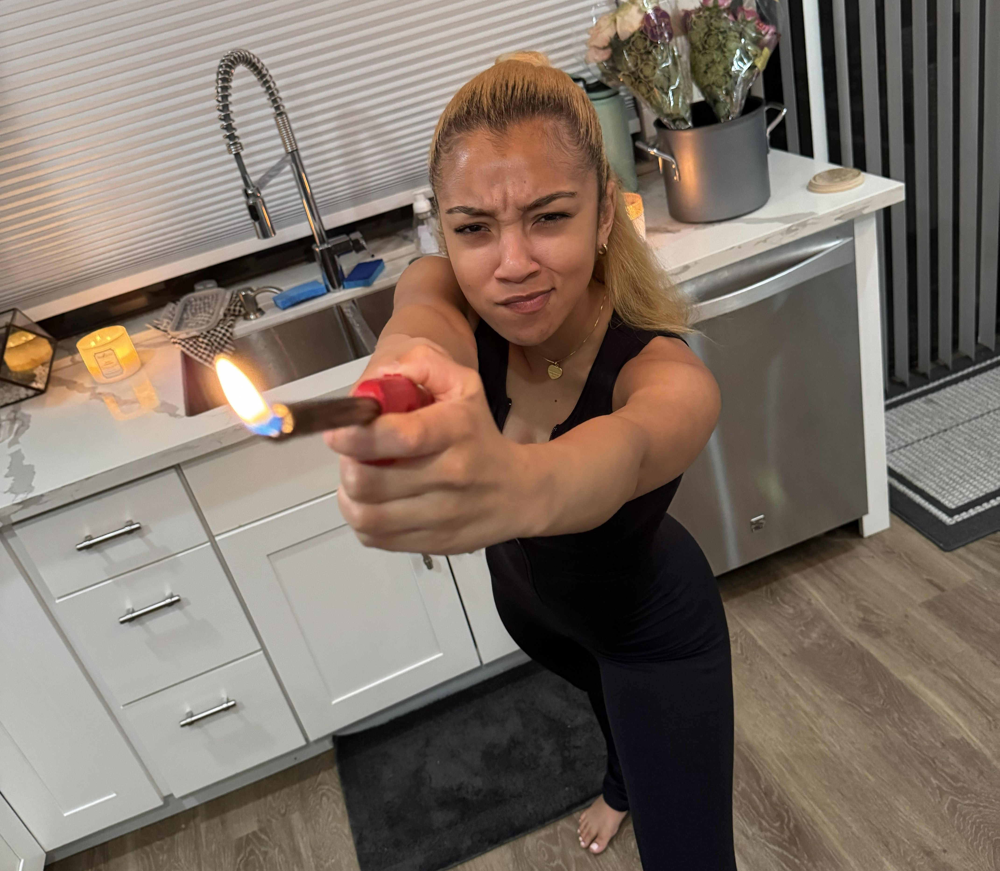
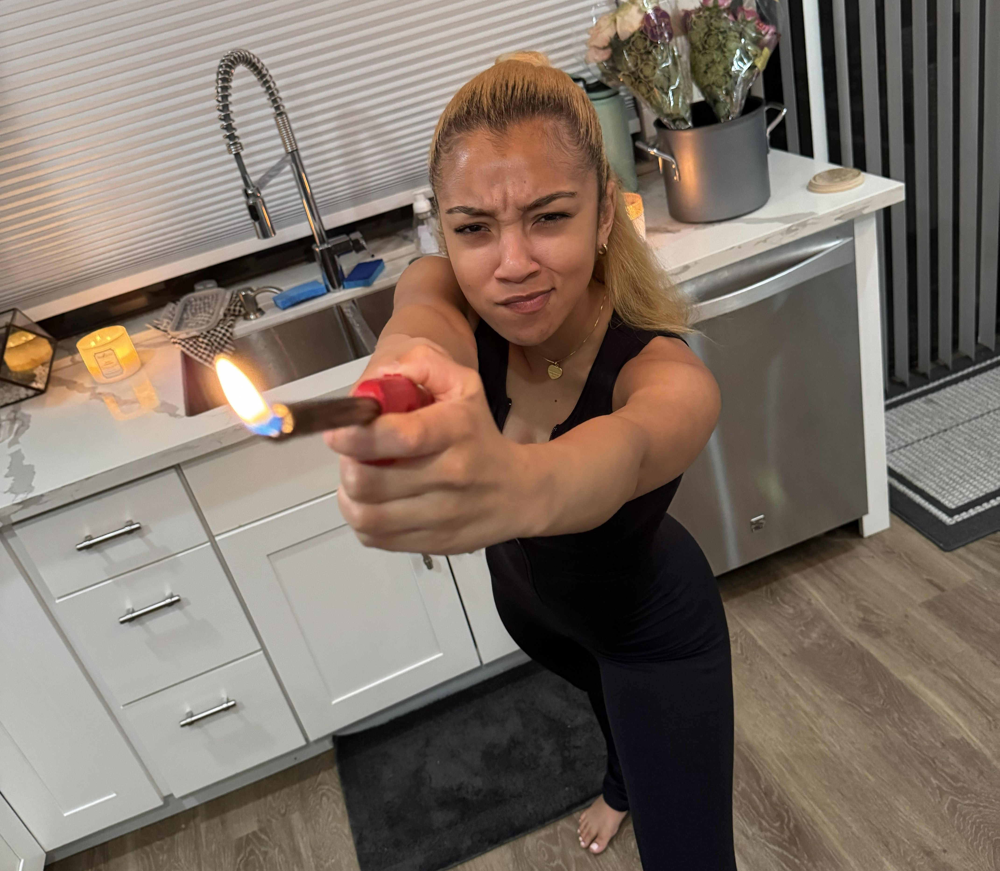

In light of our 3rd VDAY together, these are MY TOP 5 Moments power rankings...
Note*
* These are ESPECIALLY me biased, so don't start talm bout "be serious!" *
#5 DTF Dupe Dumplings
Man these dumplings were so mf fye, on top of it being a lil sentimental thing with it being Din Tai Fung. I lowkey think you might've been mad at me for something this night, but either way first time I made dumplings!
#4 First Thanksgiving!
Pretty self explanatory here, got to actually meet the family in their natural habitat. And it was really nice seeing how you just fit into the family dynamic while cooking and allat. Also took part in my annual Itis Nap!
#3 iGlizzy Joke/ Making Pizza's
I wasn't completely sure if these happened on the exact same day, but I feel like it did (if not, def close enough). Regardless, that was easily one of the funniest moments of this relationship and looking back its so stupid, but its OUR stupid. Also making those pizzas was one of our first kinda "dates" and I'm be forever grateful to be put onto jalapenos on pizza :)

#2 Mandalay Bay Escape + Chipotle from God
Dipping out on the day party early to get back to the telly before everyone [+1], Take a "shower" [+1000000], Order some drunk Chipotle [+10], Take a 4 hour nap w/ my sweets [+20], Spin the block on that bowl cold with them Doritioes [+infinity]. One of the best days of 2025 easily.
 


#1 Playing House in Palm Springs
It's just something when I think about that Palm Springs cooking, going out, watching movies, and listening to the new Drake + PND that brings me back to a happy place. There was no need for clubs or parties; just throwing down in the kitchen, having some drinks , and enjoying each others' company...loved that little life for us.